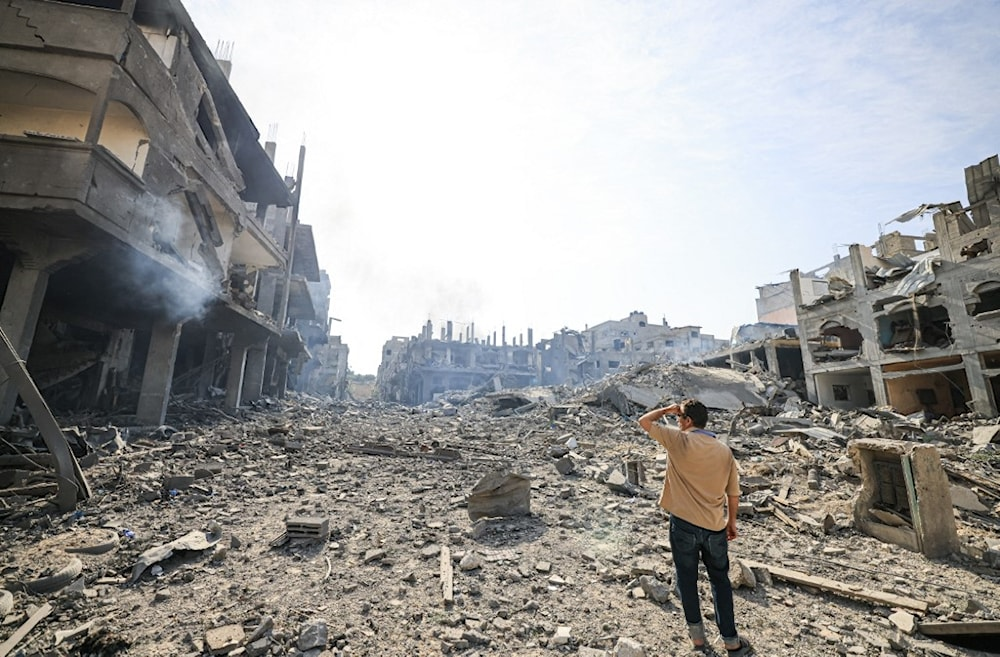

في لحظة واحدة، يمكن أن يتغير كل شيء. هذا ما حدث مع محمد الحلو، الذي لم يكن يتوقع أن تتحول الكاميرا التي يحملها إلى شاهد على فقده الشخصي. محمد كان يصوّر كغيره من أبناء غزة، يوثق الأحداث وينقل ما يحدث حوله، لكن هذه المرة لم يكن المشهد مجرد خبر… بل كان حياته. بين أصوات القصف والغبار الذي ملأ المكان، وجد نفسه أمام واقع لا يُصدق، حيث فقد أفرادًا من عائلته في لحظة واحدة، لتتحول عدسته من توثيق حدث عام إلى تسجيل لحظة انهيار شخصي. ما يجعل قصة محمد مختلفة، أنه لم يتوقف. رغم الصدمة، ورغم الألم، استمر في التصوير، وكأن الكاميرا أصبحت وسيلته الوحيدة لفهم ما حدث، أو ربما للهروب من حجم الفاجعة. في كل لقطة التقطها، لم يكن يوثق فقط الدمار، بل كان يوثق مشاعر إنسان يعيش أقسى لحظات حياته. الصوت، الصورة، الارتباك، كلها تحكي قصة لا تحتاج إلى شرح. محمد الحلو لم يكن مجرد شاهد على الحرب، بل أصبح جزءًا منها… حيث تلاشت الحدود بين المراقب والضحية. وهنا تكمن قوة القصة: أن الحقيقة لم تُنقل فقط، بل عُيشت لحظة بلحظة أمام العالم.
In a single moment, everything can change. This is what happened to Mohammad Al-Helou, who never expected his camera to witness his personal loss. Mohammad was documenting events like many others in Gaza, but this time, the scene was not just news… it was his own life. Amid explosions and dust, he faced an unimaginable reality — losing members of his family in an instant. What makes his story powerful is that he did not stop. Despite the shock and pain, he continued filming, as if the camera became his only way to process what happened. Each frame he captured was not just destruction, but raw human emotion. Mohammad was not only documenting war, he became part of it. And this is where the truth becomes undeniable: it was not just reported… it was lived.
⬅ العودة إلى القصص